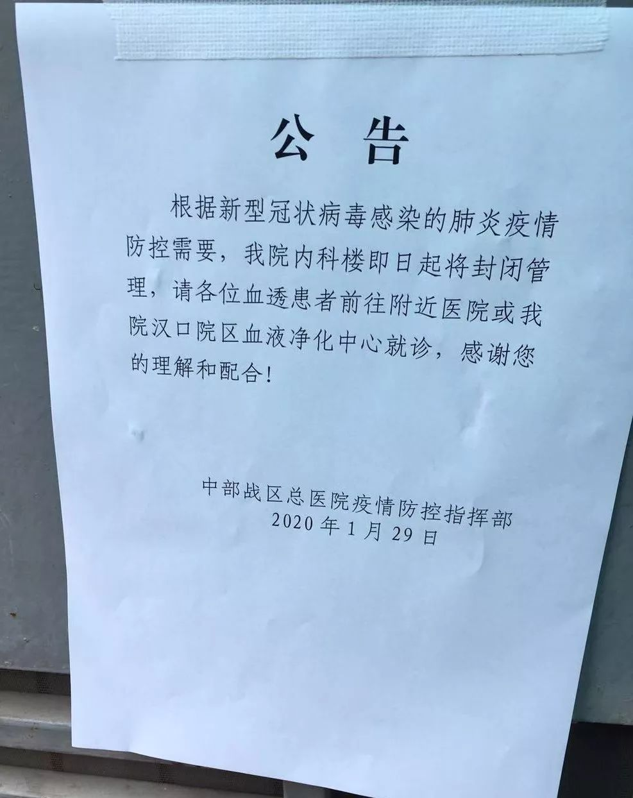

武汉急诊一线医生口述：惟愿冬天早点过去
原文链接 备份链接 2019年3月，武汉协和医院急诊科副主任孙鹏调到该医院的西院，负责急诊科的工作。12月底华南海鲜市场冠状病毒事发，西院开设发热门诊，这两个门诊的工作都落到他头上。今年1月26日上午，孙鹏告诉记者，医院刚接到通知，他们 …

每一次维持生命的出行，都充满了未知。
文 | 冯洁、高逸佳、谢婵 编辑 | 小豆
元元已经在汉阳中医院连续站了八个多小时。除了他，1月28日当晚，还有将近20名尿毒症患者聚集在汉阳中医院，他们只戴了口罩，没有别的防护。
肾内科的医生、医院保卫科的领导来来往往，双方僵持着，不断地等待、讨论甚至争吵。期间患者们“拨打了三次110的电话，无数遍卫健委的电话和市长热线，来了三批警察”，最后等到了院领导。
直到晚上九点多，院方终于承诺，会将还没找到新的透析场地的患者安排到普爱医院进行透析，患者可以先回家等具体的医院分配与透析时间安排。
新型冠状病毒感染的肺炎感染人数还在持续上升，在医院进行群体性聚集，是风险极高的行为。但规律透析是这些尿毒症患者活下去的唯一选择。
“不透析就是在等死”
血液被引出后，经人工肾脏及血液透析机器将体内多余的水份及毒素清除，再透过另一针管从瘘管注回体内。这样的透析过程，作为尿毒症患者的元元每周要经历三次，每次需要四至六小时。
1月26日，元元在透析病友群中接到通知，由于汉阳中医院被征用为第三批定点救治医院，需要清空病人、关闭透析室。负责对接的护士表示，询问了几个没被征用的医院的透析室也已经都饱和了，需要透析的患者只能自己“找路子”。
病友都开始慌了。
次日，汉阳中医院联系安排了一批病人到私人医院自费透析，还有一部分人被安排到湖北省中医院。
元元被分配到了汉阳天泽透析中心，怕之后不能透析，元元一次性交了六次透析的钱，2740多块，没有包含药费。“平常透析经过医保重症报销只要一百多。”对于部分没有工作和收入的透析病人来说，两周近三千元的花费是一笔不小的数目。
同医院包括李萍在内的几名病友还在寻找新的医院。
“你们能帮忙联系到透析的医院吗？我们这个病等不了。”元元补充道，“她们已经好几天没透析了，今天一天不敢吃喝。”
1月29日，李萍已经五天没透析了，体内的积液无法排出，全身水肿得厉害。“体内的毒素清理不干净会积累下来，损伤全身的脏器，还有一些其他的后遗症。”久了，心律不齐，血压也会持续升高，甚至可能造成死亡。
李萍四处打听消息，不断地往不同的医院跑。路上崴了脚，脚腕肿了一圈，所幸社区派了车接送。由于李萍另患有甲肝，血液具有传染性，需要适用于阳性的机器进行透析，而她联系的大多医院都已经饱和，没有机器或不再接受新的病人。
各个医院的透析室都可能面临关闭。武汉市先后征收了三批共24家定点医院，清出近万张床位收治发热病人。有病友告诉记者，自己的医院“之前转了一些透析病人过来，结果不久又变成定点了”，“透析完一次就不知道还有没有下一次”。

有病友被再分配到普仁分院透析
记者联系到武汉市新洲区卫生局，工作人员语气匆忙：“今天好多人都给我打电话说要做透析，没有办法，医院都已经满了，不管是武汉还是新洲，哪里的都收不了了，所有的医院都爆，没有办法。”
规模较大的综合医院尚有能力将病人分流到医院的其他院区，武汉协和医院宣传部负责人向记者确认，协和医院西院在被征收之后，与疫情无关的病人已经全部妥善分流。
但对于更多医院来说，一旦被征收，第二天透析室就要关闭。机器有限，甚至有些医院开通了夜间透析，或者减少透析次数以安排更多的患者。
在名为“武汉战疫”的微信群里，依旧源源不断地有新的尿毒症病友加入，逐渐扩展到了湖北地区，群里不停更新着关于透析的求助信息。ID为“双手合十”的病友回了一句：“兄弟姐妹们，互相关照一下，实在不行就减时间尽量让大家都活下去。”
这句话马上又被群里“陆总明天要关闭透析室了”的信息刷掉了。

充满未知数的出行
李炘羲在孝感市第一人民医院透析。早上5：30出门，7：20到医院，25公里的路，骑摩托花了近两个小时。父亲不放心，陪着他一起去。出村时，路口让树丫子和水泥块、废旧的水泥电线杆挡住了，清了十多分钟，两个人用力推才勉强过去，到镇上也怕有挡路的，就走了外环土路。冬天的武汉，他全身冻得冰凉。
对比群里的病友们，李炘羲觉得自己这一路算是很幸运。
自武汉1月23日封城以来，市内公共交通暂停运行，湖北省各市区都施行了不同程度的交通管制。
田磊透析完正好遇上武汉开始封城，公共交通停运，田磊靠着骑共享单车加上步行，经过晴川桥和长江大桥，前后用了五个小时才回到家。他在朋友圈写道：“人在危难时刻会迸发出极大的毅力，在我平时走几步路都觉得气喘吁吁，尤其是透析后应该是最虚弱的时候，竟然能走路加骑车近5小时。回家全身汗透。”
路途消耗对尿毒症患者是很大的负担，很多患者本就存在器官衰竭的症状，很多人无法支撑长途步行或骑行。有病友平时坐15元的大巴去透析，现在单程打车就花费了480元。
在政府安排下，社区现在可以提供必要的派车接送服务。田磊表示，现在有很多患者坐社区派的车去透析。但是不同社区情况不一，有些社区无法提供派车：“比如太远，说跨区不走。比如说二医院南京路可以24小时透析，但晚上又没车接送。各区情况不一样，资源不一样，态度也不一样。”
阿刘在社区给父亲约的车临时被取消了，这次阿刘真急了。
大年初一那天，57岁的父亲透析完，没叫到车就决定步行返回，可是老人走着走着就走错了路。等不到父亲的阿刘和警察在雨中找了几个小时才找到老人，再也不敢让老人独自去透析。到处找车的阿刘最后进了一个车队群，几经询问终于找到了车。
由于出现了一例司机被发热病人隐瞒病情，在送其去医院后即被隔离的事件之后，大多数志愿者车队与社区车队不愿意再接送前往医院的乘客，因为“生命得不到保障”。这种情况下，透析病人的出行更为困难。
田磊还担心一些老弱的需要轮椅助行的尿毒症患者，他们往往没有什么社交，也没有加入信息灵通的病友群，如果是独居的话，可能会更危险。
为落实“内防扩散、外防输出”的要求，湖北各地区以更严格的措施限制车辆和人员流动。1月29日上午11时左右，宜昌当阳市所有路灯变红，禁止一切车辆通行。孝感市自2020年1月30日零时，不仅限制机动车出行，也对电动车实施禁行。
乡镇间更是设立了大量的物理关卡，茅草、横挡的卡车、石墩都被作为路障，村、镇、市之间对于通行证的认同程度不同，被拦下来交涉几个小时是常有的事。
透析病人每一次维持生命的出行，都充满了未知。

尿毒症患者拍摄的路障。
“惊弓之鸟”
透析前，李炘羲在家里尽可能做了全套的防护。穿上带连衣帽的长羽绒服，带一个医用口罩和一个棉口罩，把帽子带上后用帽带扎紧就只露出两只眼睛，他觉得大家“都成了惊弓之鸟，感觉除了自己，谁都是病菌”。
兵哥一直没有买到新口罩，每次出入医院，他就回家用高温烫煮之后烤干，再用剩下的一点酒精喷上。

兵哥反复使用的口罩。
疫情下，武汉市天霖中西结合医院（后简称“中西医院”）成了特别的透析室。
中西医院是民营专科肾病医院，收治有近60多名需要透析的尿毒症患者。该医院与华南海鲜市场，仅两站路距离。由于属于私立医院，且没有收治肺炎病人，中西医院无法获得卫健委提供的防护服和消毒物品。
1月26日，医院领导决定停业后，无处透析的病友们联系了医生护士，商量着以私人名义做透析。但是防护物资的紧缺始终是难题，医院里的口罩和防护服都已经用完了，一开始病友通过志愿者筹集了十几套防护服，并且安排有私家车的病友去接送四名护士，成功支撑了3天，为近60名患者的提供了透析治疗。然而防护服用完后，护士们也不敢透析了。
武汉市第六医院，尽管被设为定点医院，但在尿毒症患者的强烈要求下，仍在同时接诊发热病人与开设透析室。但这带来了新的风险。尿毒症患者的免疫力差，被感染的几率高于普通人。
一方面收治发热病人的医院害怕交叉感染、疫情扩散，不敢收其他普通病人；另一方面由于存在无症状传染者，非定点医院无法仅通过测量体温排除无症状的感染者，不敢收新病人。
武汉市1月28日发布的《关于做好新冠肺炎疫情期间特殊人医疗保障工作的通知》中指出，“切实保障新型冠状病毒感染的肺炎确诊及疑似病例伴有慢性肾功能衰竭病人、孕产妇、外科疾病等人群医疗保健服务需求。”

由于武汉市正值疫情高峰，医院科室往往只要检测出一例新型冠状病毒肺炎，为防止交叉感染，整个科室都不敢再接收新的病人。
但对于未被感染，却又处于被感染风险极高状态的其他重症患者而言，所有的医疗资源都在向发热病人倾斜，重症患者需要在做好防护的同时寻找活下去的希望。
尿毒症患者并非孤例。1月29日，有急性白血病患者家属在微博求助，由于没有医院接收，又由于封城，无人献血、血库告急，病人住不进医院甚至没有排队申请输血的资格。而不能及时输上血小板，就随时会有内出血死亡的危险。
武汉地区，医院看病的需求都被政府接手，由社区联络员负责，通过“武汉微邻里”小程序进行信息登记。但对于非肺炎患者，其他病人的医疗需求该如何得到保障，仍是需要解答的问题。
病友群里，病友们在互相鼓励：“透析十几年都熬过来了，办法总比困难多。”但对于一直在不停接听电话的武汉市新洲区卫生局工作人员来说，他也只能一次次重复，“我们也没有办法，真的很特殊，不做透析也没办法，我们也没有办法。”
（应采访对象要求，文中人名均为化名）
来源｜南都周刊
END
欢迎分享到朋友圈，如想取得授权请邮件：newmedia@nbweekly.com。如果想找到小南，可以在后台回复「小南」试试看哦~

原文链接 备份链接 2019年3月，武汉协和医院急诊科副主任孙鹏调到该医院的西院，负责急诊科的工作。12月底华南海鲜市场冠状病毒事发，西院开设发热门诊，这两个门诊的工作都落到他头上。今年1月26日上午，孙鹏告诉记者，医院刚接到通知，他们 …
原文链接 备份链接 特约撰稿 李梦琪 本报记者 郭阳琛 石英婧 上海报道 “我比很多同事都幸运，除夕是在家过的。”已经在抗击疫情一线连续奋战了二十多天，除夕夜能和家人在一起度过让武汉市肺科医院隔离病区护士吴青（化名）格外欣慰。 由于武汉疫 …
原文链接 备份链接 武汉各大医院发热门诊的紧张态势已有一周，七家定点医院启动才两天已被压到极限。 武汉不缺顶级医院，不缺顶级专家，不缺顶级医疗能力，缺的是公共卫生防控能力、行政效率和疫情处理流程。 在患者和大医疗机构之间，未见到基层 …
原文链接 备份链接 本文约1471字 预计阅读时间4分钟 中青报·中青网武汉前方报道组 王嘉兴 大年初一，记者来到武汉市第五医院门诊大厅。接近中午12点，大厅里还排着多条长队，有的患者坐在自带的塑料小板凳上排队，所有的人都带着口罩。大厅里 …
原文链接 备份链接 七家二级医院被征用，成为收治新型冠状病毒患者的定点医院，但医护人员防护设备紧缺，隔离病房仍未完工。初露端倪的临时医院，最快也要六天才能建成 文 |《财经》信娜 陈晶 房宫一柳 实习记者 朱贺 编辑 | 王小 “到底什么 …